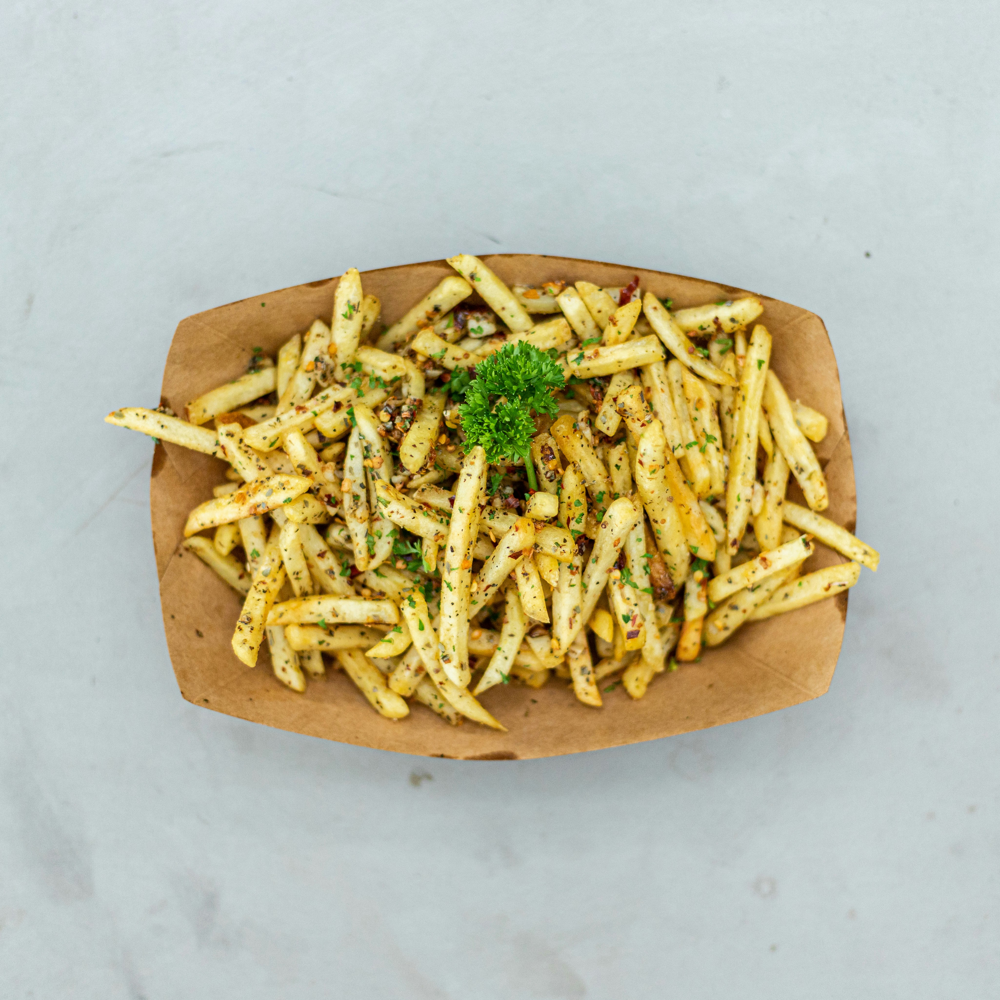

Masala Fries
Masala fries are a tasty street-style snack made by tossing crispy fries with a blend of traditional spices like
salt, chili powder, and chaat masala. They have a tangy and spicy flavor that makes them extra delicious. These
fries are simple yet full of strong, mouth-watering taste.
Go Back